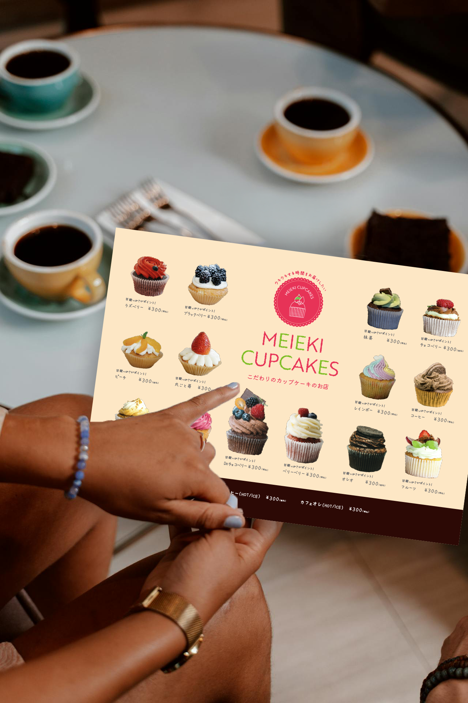
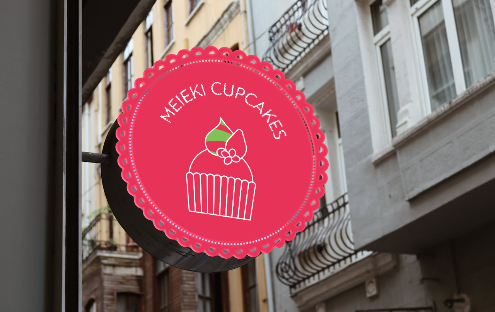
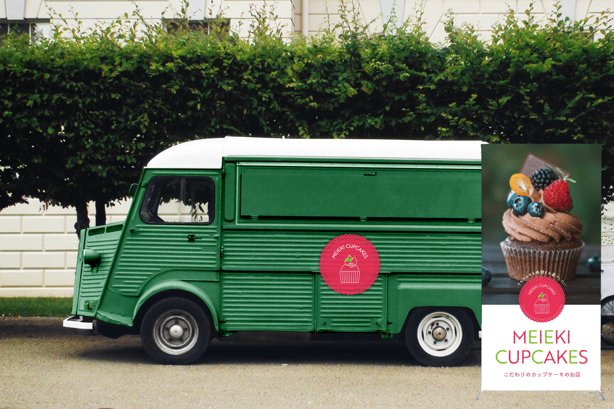

キッチンカー
カップケーキ店
デザイン
カップケーキ店
デザイン

学生のグラフィック課題の見本として制作しました。キッチンカーで売るカップケーキ店で、ロゴ、メニュー、のぼりのデザインをしました。

| ターゲット | 専門学校１年生のグラフィック課題 |
|---|---|
| 目的 | お店全体のコンセプトを考え、それに沿ったお店づくりを展開する。 |
| デザインプロセス | どんなお店にしたいか、コンセプトシートにまとめる。イメージカラー、客層、客単価、宣伝方法、支払い方法等まで設定し、コンセプトからぶれないデザイン展開をする。 |
| 制作時間 | 2週間 |
| 制作ツール | Illustrator/Photoshop |